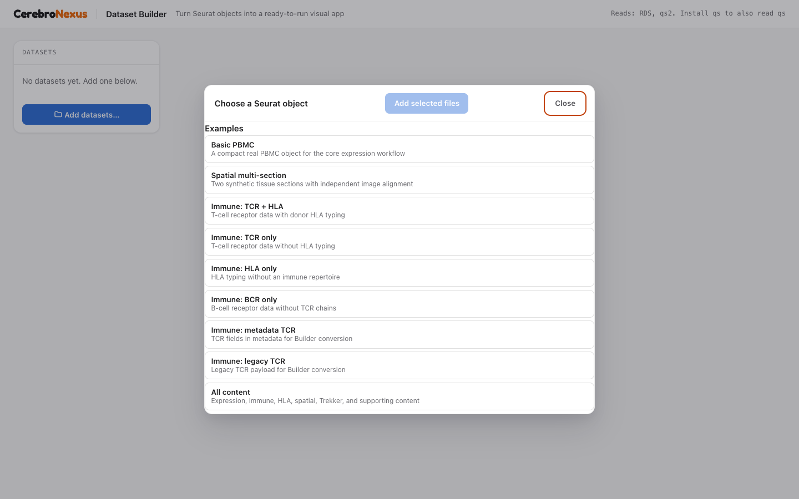
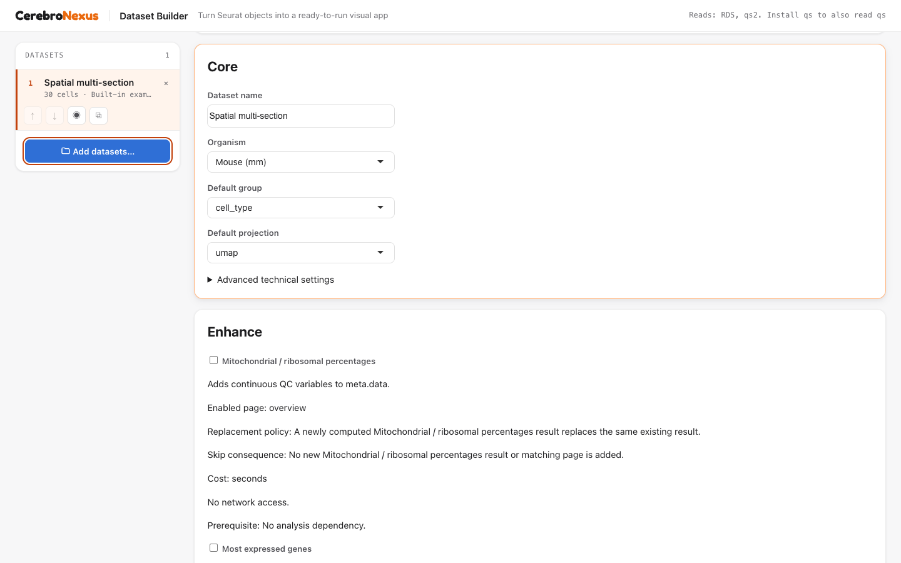
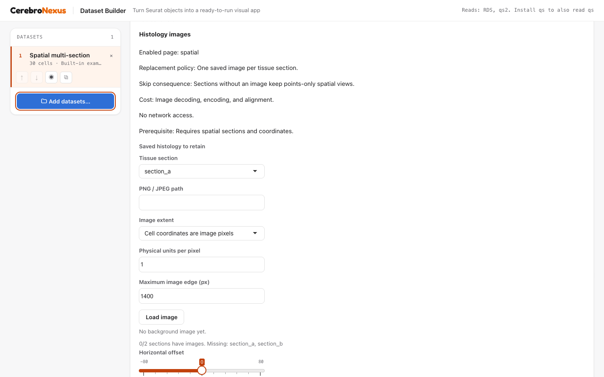
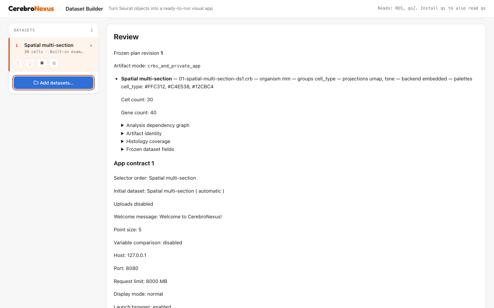
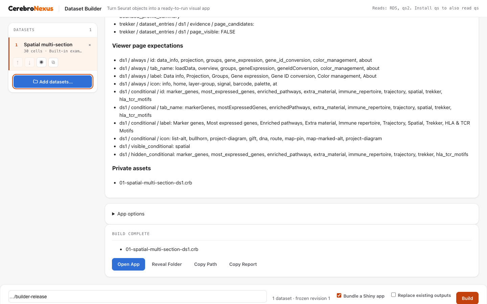

Build a data set without writing code
CerebroNexus
19 August, 2026
Source:vignettes/build_a_data_set_by_pointing.Rmd
build_a_data_set_by_pointing.RmdWhat the Builder does
The Dataset Builder turns trusted Seurat objects into a reviewed CerebroNexus release without requiring you to assemble a long export call. It uses the same export and app-generation code as the R API, but presents the choices as four guided stages:
- Import and Inspect the source and its supported content.
- Complete the Core setup for identity, expression, metadata, and Viewer defaults.
- Enhance content with opt-in analyses and supported attachments.
- Review and Build an exact frozen release plan.
The Builder is a local authoring tool. It can deserialize executable R objects, so use only files you trust and do not deploy it as an upload service for untrusted users.
Launch the installed Builder
# Open the local point-and-click Builder.
library(CerebroNexus)
launchCerebroBuilder()The launcher opens a browser on a free local port. Use
launchCerebroBuilder(port = 7799) to choose a port or
launchCerebroBuilder(launch_browser = FALSE) when another
process will open the page.
The launcher always runs the Builder shipped inside the installed package. If you are developing CerebroNexus itself, reinstall the package before checking the final user experience.
1. Import and Inspect
Choose Add datasets… to select one or more local
objects or start from the example gallery. Phase one accepts Seurat
objects stored as .rds, .qs2, and
.qs when the corresponding reader is installed. The browser
offers only formats it can read.

The gallery contains one compact All content Seurat example. It models three patients, six measured tissue sections/FOVs, optional section-owned histology sidecars, and Trekker. Patient, section, FOV, and image identities are explicit: a tissue photograph is not a new spatial FOV. Gallery and file inputs use distinct source adapters, then join the shared import pipeline for inspection, recommendations, snapshots, Review, and Build.
After loading, Import & Inspect reports cells, genes, detected content, attention items, and blockers. A dataset is registered only after the worker has loaded it, profiled it, and created an immutable session-private snapshot. File-backed storage needed by the object is copied into that snapshot as well.
This isolation makes retry and worker restart repeatable, but it is not free: the snapshot disk cost can approach the size of the object plus its backing files. Snapshots have owner-only permissions and are cleaned when the session releases them. If the complete storage closure cannot be frozen safely, import stops before the dataset becomes Ready.
The dataset rail controls ordering, the initial dataset, duplication, and removal. On a narrow screen it becomes a Dataset Manager dialog without changing the stored order or readiness state.
2. Core setup
Core contains the small set of choices every export needs:
- dataset name and organism;
- default metadata group and default projection;
- assay and logical layer;
- UMI and feature-count columns;
- embedded, HDF5, or BPCells expression storage.
Only choices proven valid by inspection are offered. Advanced technical settings remain available under a disclosure, while the recommended novice path stays visible. The chosen group and projection become the generated Viewer’s actual startup defaults and remain members of the frozen included sets.

Colour palettes belong to the generated App configuration, not to the CRB format. A CRB opened elsewhere therefore uses Viewer defaults, while the App starts with the per-dataset and per-group colours frozen by the Builder.
3. Enhance content
Enhance separates optional work from content already present on the object. The Builder can opt in to mitochondrial/ribosomal percentages, most-expressed genes, marker genes, and Enrichr enrichment from an explicitly selected marker method. Every analysis states its dependencies, estimated cost, network use, and replacement policy before it enters the plan.
Valid existing marker tables, enrichment, monocle2
trajectories, immune repertoire, HLA typing, spatial content, Trekker
content, extra tables, and extra plots are preserved or normalized
according to the manifest. Supplementary CSV/TSV/TXT tables and PNG/JPEG
histology images can be attached through their explicit controls.

For spatial data, each FOV has its own coordinates; a tissue section can own several labelled images (for example H&E and DAPI). The alignment view overlays one selected PNG or JPEG on its FOV and records its own bounds and transform. Coordinates-only FOVs remain valid. TIFF and OME-TIFF require conversion before import.
Selected analysis failures are never presented as successful partial work. The result becomes Needs decision: retry the failed item with its dependency closure, or remove it explicitly, return to Review, and freeze a new plan.
4. Review and Build
Review is an exact, immutable description of the frozen plan that
Build will execute. It shows the plan revision, dataset order, output
filenames, expression backends, analysis dependencies, content
dispositions, expected Viewer pages, App settings, planned payload
targets, replacement policy, and estimated runtime and disk. Publication
later adds build-report.json and
.cerebro-builder-release-v1, matching the final release
tree below.

Choose one artifact mode:
- CRB-only releases the CRBs and any HDF5/BPCells sidecars.
-
Public App releases
cerebro_app/; its private data directory contains the CRBs and sidecars. -
Login App does the same, and adds
viewer-auth.envbeside the App. In Review, select Require login, add each local account, then Build and open the generated App from its release directory to verify the local login. Keepviewer-auth.envwith the App when moving a release; never commit it to Git or place it in a web-accessible directory.
Review’s disk estimate counts the source snapshot payload once per dataset; it is not a prediction of the complete release size. An App contains a private data copy, and the report and ownership record add further release-visible files.
Pressing Build creates a single-flight request from the frozen snapshot. Draft controls cannot change that request. Cancellation is available while the worker is preparing artifacts; once the short final publication transaction begins, it runs to a safe terminal state instead of being interrupted between renames.
Private storage is not a public URL
The generated App keeps CRBs and HDF5/BPCells sidecars under
private-data/. That directory is not registered as a Shiny
static resource. The viewer_bundle_assets list records
private runtime inputs that are eligible to be copied into the bundle;
membership is not HTTP exposure. Spatial images are read by the server
and embedded as data URIs. Direct requests for CRBs, sidecars, private
data, build reports, and spatial source files return no file.
This is a packaging boundary, not a substitute for host authentication. Deploy the generated App only on infrastructure whose access policy matches the data.
Results, replacement, and recovery
A successful result names the published artifacts. Every published release offers Reveal Folder, Copy Path, and Copy Report. The report is portable and redacted; it describes artifact-visible datasets, methods, and metadata columns without source paths, host/PID data, lock paths, or raw values.

One release is published as a transaction:
CRB-only release
├── 01-<dataset>.crb
├── build-report.json
└── .cerebro-builder-release-v1
Public App release
├── cerebro_app/
│ └── private-data/01-<dataset>.crb
├── build-report.json
└── .cerebro-builder-release-v1
Login App release
├── viewer-auth.env
├── cerebro_app/
│ └── private-data/
│ ├── 01-<dataset>.crb
│ └── auth/credentials.sqlite
├── build-report.json
└── .cerebro-builder-release-v1The coordinator writes into a private same-filesystem stage, validates the whole payload, moves the prior release to a backup, renames the stage into place, verifies the final location, and only then retires the backup. Ordinary failures use rollback and leave the previous release intact. If process death interrupts the two-rename window, conservative recovery restores or preserves the old release rather than claiming zero downtime.
The ownership record lists every Builder-owned release member. A later build can safely remove an old App or dataset only when that record proves ownership; foreign or symbolic entries block replacement and remain untouched. For ownership migration, a legacy release without a record can be replaced only when its complete topology remains in the new plan. Shrinking it requires a record-bearing publication first or explicit manual resolution.
Phase-one limits
- Input adapters cover trusted Seurat files and shipped examples. SCE, CRB, h5ad, h5Seurat, loom, and remote-upload adapters are not implemented.
- The Builder does not generate trajectories, GSEA, Trekker mappings, or extra plots. It preserves supported existing forms and diagnoses unsupported ones.
- Only
monocle2trajectories are exported. Other methods are reported as filtered rather than disappearing silently. - Histology attachment accepts PNG/JPEG; TIFF and OME-TIFF need conversion.
- Colours and Viewer launch options belong to a generated App, not a bare CRB.
- Publication protects the prior release and supports recovery, but it does not promise uninterrupted service through process death during final replacement.
These boundaries keep Review truthful: content is described as configured, generated, attached, converted, preserved, stored only, filtered, or blocked according to what the current exporter and Viewer can actually support.